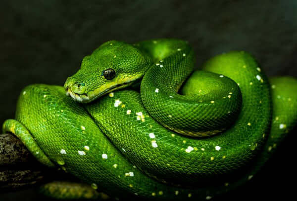
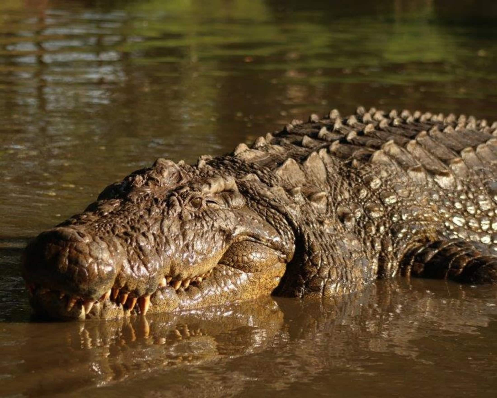

Peso:pode variar de poucos gramas a mais de 100 kg.
Comprimento: varia de 10 cm (cobras pequenas) a mais de 10 m (como a píton-reticulada).
Cauda: geralmente curta, diferindo do corpo em espessura.
Comprimento: varia de 10 cm (cobras pequenas) a mais de 10 m (como a píton-reticulada).
Cauda: geralmente curta, diferindo do corpo em espessura.
Cobra

Peso: entre 7 kg e 450 kg.
Comprimento: entre 1,5 m e 6 m, dependendo da espécie.
Cauda: longa e musculosa, ajuda na natação.
Comprimento: entre 1,5 m e 6 m, dependendo da espécie.
Cauda: longa e musculosa, ajuda na natação.
Jacaré

Peso: até 1 tonelada.
Comprimento: até 7 m (maiores espécies).
Cauda: muito forte, usada como arma e para impulsão na água.
Comprimento: até 7 m (maiores espécies).
Cauda: muito forte, usada como arma e para impulsão na água.
Crocodilo